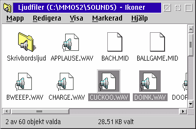

Klass: XFolder
&xwp; erbjuder dig de snyggaste och mest flexibla mappstatusf„lt som finns
(enligt min †sikt, i varje fall). Dessa „r ytterst konfigurerbara p† "Statusf„lt" sidorna hos
det nya "Workplace Shell" objektet och kan ocks† v„xlas av eller p†
individuellt f”r varje mapp.
Notera: Mapp statusf„lt „r avaktiverade som standard f”r hindra sido-effekter ifall du
redan har programvaror som l„gger till statusf„lt. G† till
"Workplace Shell" objektet f”r att sl† p† &xwp;'s
statusf„lt, men se till att avaktivera den h„r funktionen hos andra programvaror f”rst; annars blir
resultatet of”ruts„gbart.

Statusf„lt fungerar p† tre s„tt, det betyder, att de kan visa olika information
beroende p† hur m†nga objekt som f”r n„rvarande „r valda i mappen:
- "Inga-objekt s„ttet": detta g„ller n„r inga objekt alls „r valda. Som standard, visar detta
det totala antalet objekt i en mapp och deras totala storlek s†v„l som fritt utrymme hos mappens enhet.
- "Ett-objekt s„ttet": detta g„ller n„r exakt ett objekt „r valt. Beroende p† klassen hos objektet,
visas olika information. Till exempel, mappar och datafiler kommer att visa filsystemsinformation
(verkligt namn, klass, storlek, datum, och tid).
- "Multipla-objekt s„ttet": detta g„ller n„r fler „n ett objekt „r valt. Som standard, visar detta
antalet valda poster, det totala antalet objekt i mappen och den summerade storleken hos de valda
posterna (som p† den visade sk„rmbilden).
F”r var och ett av dessa tre s„tt kan du konfigurera fritt vad du vill visa i statusf„lten.
Detta „r f”rklarat i detalj p† sidan
"Konfigurera statusf„lt".